Grade 8
3260 no-prep resources for grade 8 with answer keys: reading comprehension passages, reading trails, and math centers.
3,260 resources
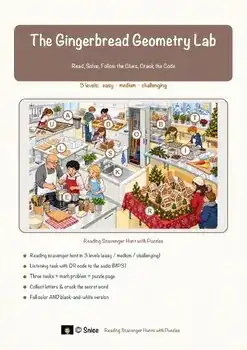
Geometry Reading Comprehension Passages | Math Scavenger Hunt 7-8
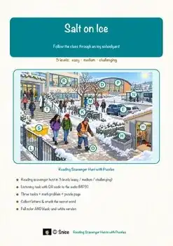
Salt on Ice Reading Comprehension Passages | Science Scavenger Hunt 7-8
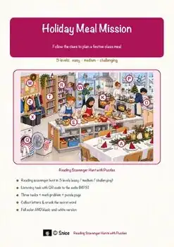
Holiday Meal Reading Comprehension Passages | Life Skills Scavenger Hunt 7-8
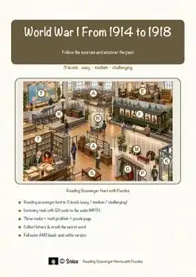
World War I Reading Comprehension Passages | History Scavenger Hunt 8-9
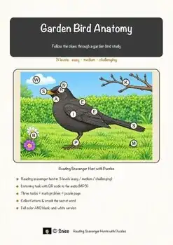
Garden Bird Anatomy Reading Comprehension Passages | Biology Scavenger Hunt 7-8
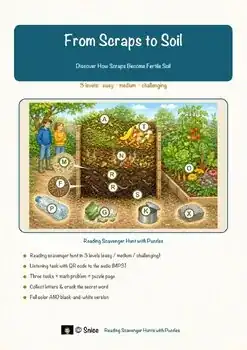
Composting Reading Comprehension Passages | Science Scavenger Hunt 7-8
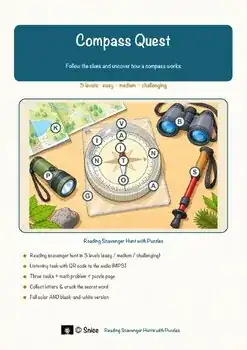
Compass Reading Comprehension Passages | Physics Scavenger Hunt 7-8
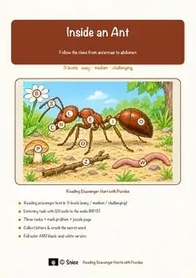
Ant Reading Comprehension Passages | Biology Scavenger Hunt 7-8
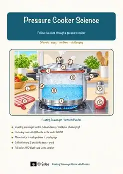
Pressure Cooker Reading Comprehension Passages | Physics Scavenger Hunt 7-8
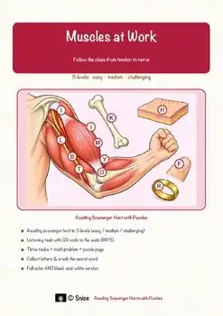
Muscles Reading Comprehension Passages | Biology Scavenger Hunt 7-8
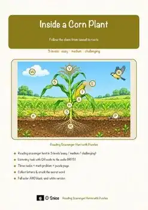
Inside a Corn Plant Reading Comprehension Passages | Reading Scavenger Hunt 7-8
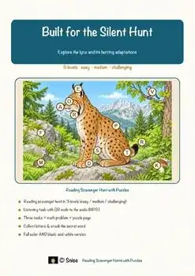
Lynx Reading Comprehension Passages | Biology Scavenger Hunt 7-8
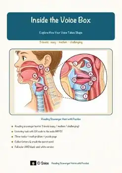
Voice Box Reading Comprehension Passages | Biology Scavenger Hunt 7-8
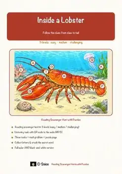
Lobster Reading Comprehension Passages | Biology Scavenger Hunt 7-8
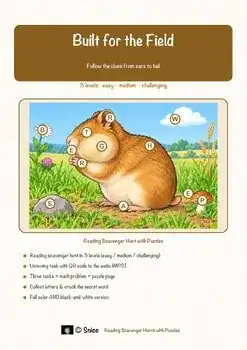
Hamster Reading Comprehension Passages | Biology Scavenger Hunt 7-8
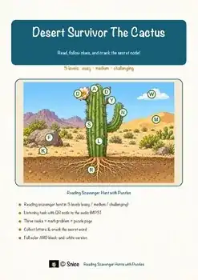
Cactus Reading Comprehension Passages | Biology Scavenger Hunt 7-8
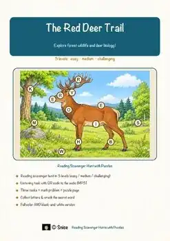
The Red Deer Trail Reading Comprehension | Reading & Biology Scavenger Hunt 7-8
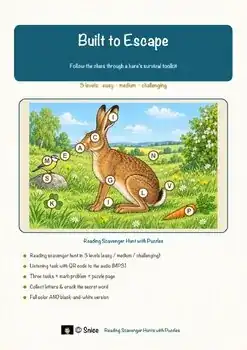
Hare Reading Comprehension Passages | Biology Scavenger Hunt 7-8
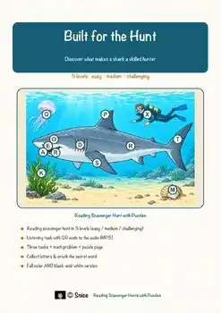
Shark Reading Comprehension Passages | Biology Scavenger Hunt 7-8
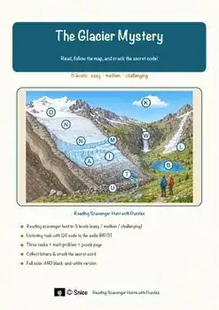
Glaciers Reading Comprehension Passages | Earth Sciences Scavenger Hunt 7-8
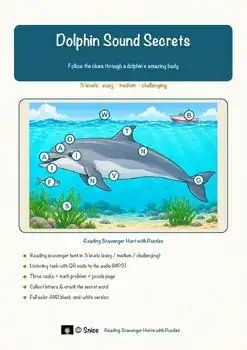
Dolphin Sound Reading Comprehension Passages | Science Scavenger Hunt 7-8
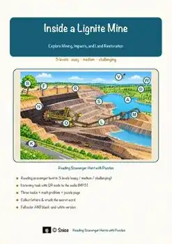
Lignite Mining Reading Comprehension Passages | Geography Scavenger Hunt 7-8
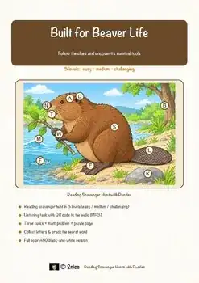
Beaver Adaptations Reading Comprehension Passages | Science Scavenger Hunt 7-8
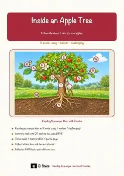
Apple Tree Reading Comprehension Passages | Science Scavenger Hunt 7-8
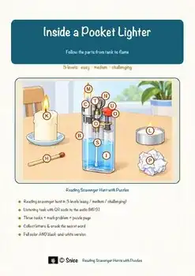
Pocket Lighter Reading Comprehension Passages | Science Scavenger Hunt 7-8
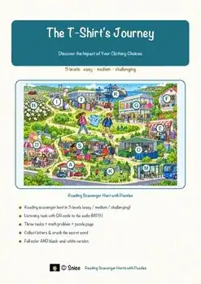
T-Shirt Reading Comprehension Passages | Environment Scavenger Hunt 7-8
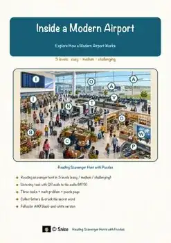
Airport Reading Comprehension Passages | Geography Scavenger Hunt 7-8
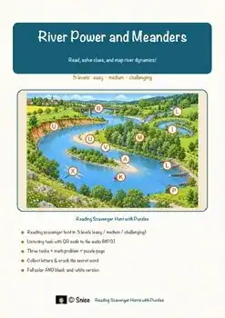
River Meanders Reading Comprehension Passages | Earth Science Scavenger Hunt 7-8
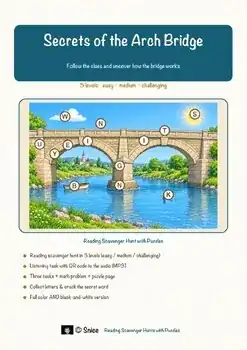
Arch Bridge Reading Comprehension Passages | Physics Scavenger Hunt 7-8
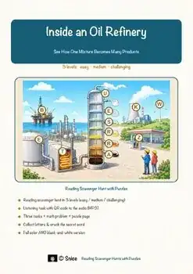
Oil Refinery Reading Comprehension Passages | Chemistry Scavenger Hunt 8-9
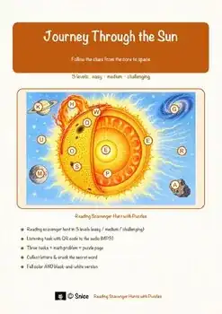
Journey Through the Sun Reading Comprehension | Science Scavenger Hunt 8-9
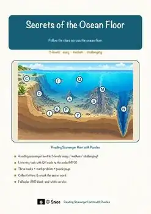
Ocean Floor Reading Comprehension Passages | Earth Science Scavenger Hunt 7-8
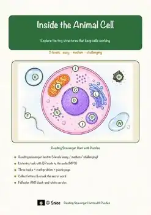
Animal Cell Reading Comprehension Passages | Biology Scavenger Hunt 7-8
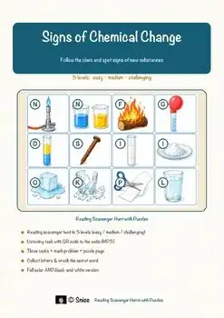
Chemical Change Reading Comprehension Passages | Science Scavenger Hunt 7-8
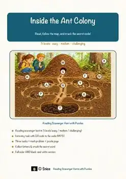
Ant Colony Reading Comprehension Passages | Biology Scavenger Hunt 7-8
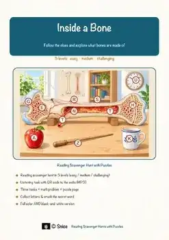
Bone Structure Reading Comprehension Passages | Science Scavenger Hunt 7-8
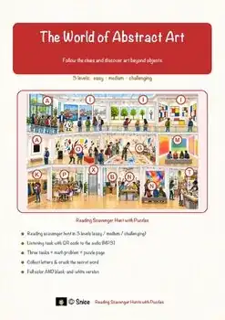
The World of Abstract Art Reading Comprehension | Reading Scavenger Hunt 7-8
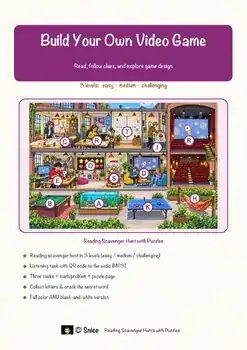
Video Game Coding Reading Comprehension Passages | Tech Scavenger Hunt 7-8
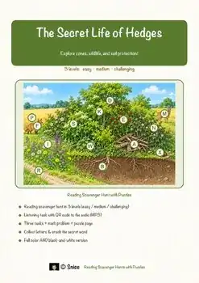
Hedges Reading Comprehension Passages | Science Scavenger Hunt 7-8
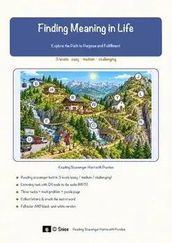
Finding Meaning in Life Reading Passages | Reading Scavenger Hunt 7-8
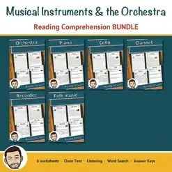
Musical Instruments Reading Comprehension BUNDLE | Orchestra & Piano
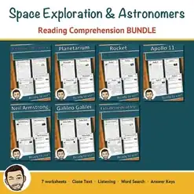
Space Exploration Reading Comprehension BUNDLE | Apollo 11 & Rockets
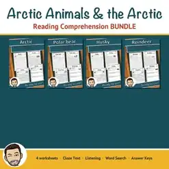
Arctic Animals Reading Comprehension BUNDLE | Polar Bears & Huskies
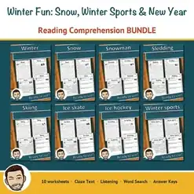
Winter Reading Comprehension BUNDLE | Snow, Winter Sports & New Year
Spring Holidays Reading Comprehension BUNDLE | Easter, Passover & Eid
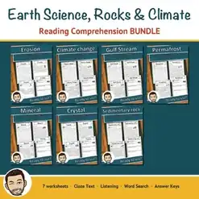
Earth Science Reading Comprehension BUNDLE | Rocks, Minerals & Climate
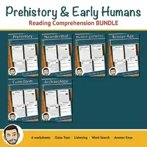
Prehistory Reading Comprehension BUNDLE | Stone Age to Bronze Age
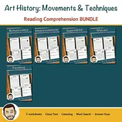
Art History Reading Comprehension BUNDLE | Renaissance, Impressionism
No resources found – try a different search term or filter.